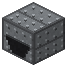
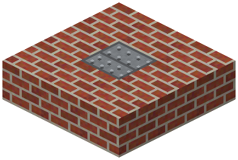
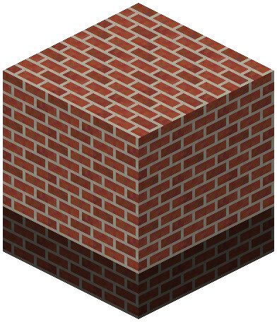
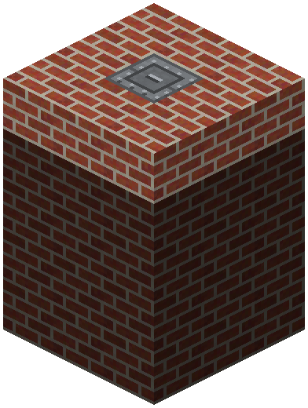
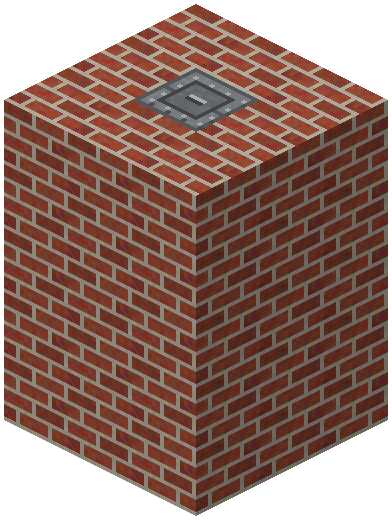

Silo Outlet


Silo: the outlet sits in a ring of 8 walls, 3x3 layers of walls above it, the hatch in the centre of the top layer. One bulk material (ore, crushed ore, coal, coke, sand, gravel, clay, grain, seeds), load into the hatch, unload with a hopper/pipe under the outlet, comparator. 2304 per layer; height: brick 4 layers, steel 8, concrete 12.
Parameters
| Era | 2 — Steam and mechanics |
|---|---|
| Multiblock | yes: silo walls |
| Drive | own firebox |
| What it does | one kind of bulk, 2304 per layer; brick/steel/concrete walls — height 4/8/12 |
| Made of | steel plates, bronze gear; walls — brick / steel plates + rivets / concrete |
Numbers
| silo: items per 3x3 layer of walls | 2304 pcs |
|---|
Feeds
- no Zavod machine uses its product
Assembly
One bulk material per silo; comparator reads the fill.

Bottom: the outlet in a ring of 8 walls. Unload with a hopper or pipe under the outlet.

3x3 wall layers above. Height by the weakest wall: brick / steel / concrete — 4, 8, 12 layers.

Top layer: a ring of walls with the hatch in the middle (load by skip, conveyor, pipe or hand).

Faded blocks were placed in earlier steps.